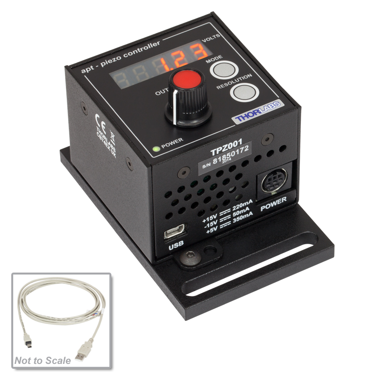
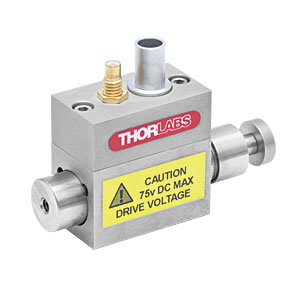
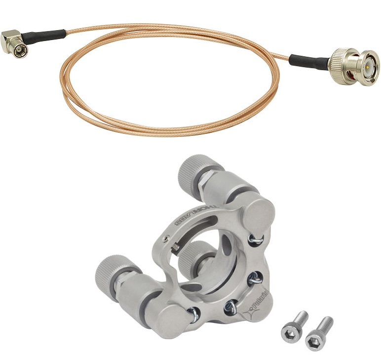
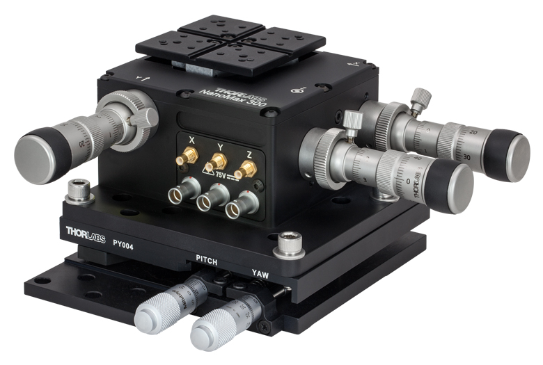

TPZ001

Controller Description
The TPZ001 is a compact single-channel T-Cube controller from Thorlabs designed for precise control of piezoelectric actuators. It provides highly accurate position control for applications requiring nanometer-level precision. The TPZ001 supports closed-loop operation with feedback from piezo sensors and is compatible with Thorlabs’ piezo actuators. It features USB connectivity for computer control via Thorlabs’ Kinesis Software or QuantumION's Thorlabs Cube Repository.
Controller Use-Cases
- TPZ001 is ideal for applications requiring ultra-fine positioning, such as:
- Nanopositioning: High-precision adjustments of optical components.
- Interferometry: Fine control of optical path lengths for precision measurements.
- Microscopy: Managing piezo-driven sample stages for sub-micron positioning.
Peripherals Examples
- Piezoelectric Actuators

- Piezo-Driven Mirror Mounts

- Piezo Translation Stages

API Reference
Bases: _Cube
Either :py:meth:set_tpz_io_settings()<Tpz.set_tpz_io_settings>
or :py:meth:get_tpz_io_settings()<Tpz.get_tpz_io_settings> must
be completed to finish initialising the driver.
Source code in venv/lib/python3.9/site-packages/thorlabs_cube/driver/tcube/tpz.py
8 9 10 11 12 13 14 15 16 17 18 19 20 21 22 23 24 25 26 27 28 29 30 31 32 33 34 35 36 37 38 39 40 41 42 43 44 45 46 47 48 49 50 51 52 53 54 55 56 57 58 59 60 61 62 63 64 65 66 67 68 69 70 71 72 73 74 75 76 77 78 79 80 81 82 83 84 85 86 87 88 89 90 91 92 93 94 95 96 97 98 99 100 101 102 103 104 105 106 107 108 109 110 111 112 113 114 115 116 117 118 119 120 121 122 123 124 125 126 127 128 129 130 131 132 133 134 135 136 137 138 139 140 141 142 143 144 145 146 147 148 149 150 151 152 153 154 155 156 157 158 159 160 161 162 163 164 165 166 167 168 169 170 171 172 173 174 175 176 177 178 179 180 181 182 183 184 185 186 187 188 189 190 191 192 193 194 195 196 197 198 199 200 201 202 203 204 205 206 207 208 209 210 211 212 213 214 215 216 217 218 219 220 221 222 223 224 225 226 227 228 229 230 231 232 233 234 235 236 237 238 239 240 241 242 243 244 245 246 247 248 249 250 251 252 253 254 255 256 257 258 259 260 261 262 263 264 265 266 267 268 269 270 271 272 273 274 275 276 277 278 279 280 281 282 283 284 285 286 287 288 289 290 291 292 293 294 295 296 297 298 299 300 301 302 303 304 305 306 307 308 309 310 311 312 313 314 315 316 317 318 319 320 321 322 323 324 325 326 327 328 329 330 331 332 333 334 335 336 337 338 339 340 341 342 343 344 345 346 347 348 349 350 351 352 353 354 355 356 357 358 359 360 361 362 363 364 365 366 367 368 369 370 371 372 373 374 375 376 377 378 379 380 381 382 383 384 385 386 387 388 389 390 391 392 393 394 395 396 397 398 399 400 401 402 403 404 405 406 407 408 409 410 411 412 413 414 415 416 417 418 419 420 421 422 423 424 425 426 427 428 429 430 431 432 433 434 435 436 437 438 439 440 441 442 443 444 445 446 447 448 449 450 451 452 453 454 455 456 457 458 459 460 461 462 463 464 465 466 467 468 | |
get_input_volts_source()
async
Get the input source(s) which controls the output from the HV amplifier circuit.
:return: Value which selects the various analog sources, cf.
:py:meth:set_input_volts_source()<Tpz.set_input_volts_source>
method docstring for meaning of bits.
:rtype: int
Source code in venv/lib/python3.9/site-packages/thorlabs_cube/driver/tcube/tpz.py
157 158 159 160 161 162 163 164 165 166 167 168 169 | |
get_output_lut()
async
Get the ouput LUT values for WGM (Waveform Generator Mode).
:return: a tuple whose first element is the lut index and the second is the voltage output value. :rtype: a 2 elements tuple (int, float)
Source code in venv/lib/python3.9/site-packages/thorlabs_cube/driver/tcube/tpz.py
246 247 248 249 250 251 252 253 254 255 256 257 | |
get_output_lut_parameters()
async
Get Waveform Generator Mode parameters.
:return: a 6 int elements tuple whose members are (mode, cycle_length, num_cycles, delay_time, precycle_rest, postcycle_rest). :rtype: 6 int elements tuple
Source code in venv/lib/python3.9/site-packages/thorlabs_cube/driver/tcube/tpz.py
342 343 344 345 346 347 348 349 350 351 352 353 354 | |
get_output_position()
async
Get output position of piezo actuator.
:return: The output position of the piezo relative to the zero position. :rtype: int
Source code in venv/lib/python3.9/site-packages/thorlabs_cube/driver/tcube/tpz.py
119 120 121 122 123 124 125 126 127 128 129 | |
get_output_volts()
async
Get the output voltage applied to the piezo actuator.
:return: The output voltage. :rtype: float
Source code in venv/lib/python3.9/site-packages/thorlabs_cube/driver/tcube/tpz.py
93 94 95 96 97 98 99 100 101 102 | |
get_pi_constants()
async
Get the proportional and integration feedback loop constants.
:return: Returns a tuple whose first element is the proportional term and the second element is the integral term. :rtype: a 2 int elements tuple : (int, int)
Source code in venv/lib/python3.9/site-packages/thorlabs_cube/driver/tcube/tpz.py
187 188 189 190 191 192 193 194 195 196 197 | |
get_position_control_mode()
async
Get the control loop mode.
:return: Returns the control mode. 0x01 for Open Loop (no feedback). 0x02 for Closed Loop (feedback employed). 0x03 for Open Loop Smooth. 0x04 for Closed Loop Smooth. :rtype: int
Source code in venv/lib/python3.9/site-packages/thorlabs_cube/driver/tcube/tpz.py
55 56 57 58 59 60 61 62 63 64 65 66 67 68 | |
get_tpz_display_settings()
async
Get the intensity of the LED display on the front of the TPZ unit.
:return: The intensity as a value from 0 (Off) to 255 (brightest). :rtype: int
Source code in venv/lib/python3.9/site-packages/thorlabs_cube/driver/tcube/tpz.py
382 383 384 385 386 387 388 389 390 391 | |
get_tpz_io_settings()
async
Get various I/O settings.
:return: Returns a tuple whose elements are the voltage limit and the
Hub analog input. Refer to :py:meth:set_tpz_io_settings()
Source code in venv/lib/python3.9/site-packages/thorlabs_cube/driver/tcube/tpz.py
446 447 448 449 450 451 452 453 454 455 456 457 458 459 460 461 462 463 464 465 466 467 468 | |
set_eeprom_parameters(msg_id)
async
Save the parameter settings for the specified message.
:param msg_id: The message ID of the message containing the parameters to be saved.
Source code in venv/lib/python3.9/site-packages/thorlabs_cube/driver/tcube/tpz.py
364 365 366 367 368 369 370 371 | |
set_input_volts_source(volt_src)
async
Set the input source(s) which controls the output from the HV amplifier circuit (i.e. the drive to the piezo actuators).
:param volt_src: The following values are entered into the VoltSrc parameter to select the various analog sources:
0x00 Software Only: Unit responds only to software inputs and the
HV amp output is that set using the :py:meth:`set_output_volts()`
<Tpz.set_output_volts>` method.
0x01 External Signal: Unit sums the differential signal on the rear
panel EXT IN(+) and EXT IN(-) connectors with the voltage set
using the set_outputvolts method.
0x02 Potentiometer: The HV amp output is controlled by a
potentiometer input (either on the control panel, or connected
to the rear panel User I/O D-type connector) summed with the
voltage set using the set_outputvolts method.
The values can be bitwise or'ed to sum the software source with
either or both of the other source options.
Source code in venv/lib/python3.9/site-packages/thorlabs_cube/driver/tcube/tpz.py
131 132 133 134 135 136 137 138 139 140 141 142 143 144 145 146 147 148 149 150 151 152 153 154 155 | |
set_output_lut(lut_index, output)
async
Set the ouput LUT values for WGM (Waveform Generator Mode).
It is possible to use the controller in an arbitrary Waveform Generator Mode (WGM). Rather than the unit outputting an adjustable but static voltage or position, the WGM allows the user to define a voltage or position sequence to be output, either periodically or a fixed number of times, with a selectable interval between adjacent samples.
This waveform generation function is particularly useful for operations such as scanning over a particular area, or in any other application that requires a predefined movement sequence. The waveform is stored as values in an array, with a maximum of 513 samples.
The samples can have the meaning of voltage or position; if open loop operation is specified when the samples are output, then their meaning is voltage and vice versa, if the channel is set to closed loop operation, the samples are interpreted as position values.
If the waveform to be output requires less than 513 samples, it is
sufficient to download the desired number of samples. This function is
used to load the LUT array with the required output waveform. The
applicable channel is specified by the Chan Ident parameter If only a
sub set of the array is being used (as specified by the cyclelength
parameter of the :py:meth:set_output_lut_parameters()
:param lut_index: The position in the array of the value to be set (0
to 512 for TPZ).
:param output: The voltage value to be set. Values are in the range
[0; voltage_limit]. Voltage_limit being set with the
:py:meth:set_tpz_io_settings<Tpz.set_tpz_io_settings>
method.
Source code in venv/lib/python3.9/site-packages/thorlabs_cube/driver/tcube/tpz.py
199 200 201 202 203 204 205 206 207 208 209 210 211 212 213 214 215 216 217 218 219 220 221 222 223 224 225 226 227 228 229 230 231 232 233 234 235 236 237 238 239 240 241 242 243 244 | |
set_output_lut_parameters(mode, cycle_length, num_cycles, delay_time, precycle_rest, postcycle_rest)
async
Set Waveform Generator Mode parameters.
It is possible to use the controller in an arbitrary Waveform Generator Mode (WGM). Rather than the unit outputting an adjustable but static voltage or position, the WGM allows the user to define a voltage or position sequence to be output, either periodically or a fixed number of times, with a selectable interval between adjacent samples. This waveform generation function is particularly useful for operations such as scanning over a particular area, or in any other application that requires a predefined movement sequence. This function is used to set parameters which control the output of the LUT array.
:param mode: Specifies the ouput mode of the LUT waveform as follows:
0x01 - Output Continuous - The waveform is output continuously
(i.e. until a StopOPLut command is received.)
0x02 - Output Fixed - A fixed number of waveform cycles are output
(as specified in the num_cycles parameter).
:param cycle_length: Specifies how many samples will be output in each cycle of the waveform. It can be set in the range [0; 512] (for TPZ). It must be less than or equal to the total number of samples that were loaded. :param num_cycles: Specifies the number of cycles (1 to 2147483648) to be output when the Mode parameter is set to fixed. If Mode is set to Continuous, the num_cycles parameter is ignored. In both cases, the waveform is not output until a StartOPLUT command is received. :param delay_time: Specifies the delay (in sample intervals) that the system waits after setting each LUT output value. By default, the time the system takes to output LUT values (sampling interval) is set at the maximum bandwidth possible, i.e. 4 kHz (0.25 ms) for TPZ units. The delay_time parameter specifies the time interval between neighbouring samples, i.e. for how long the sample will remain at its present value. To increase the time between samples, set the delay_time parameter to the required additional delay (1 to 2147483648 sample intervals). In this way, the user can stretch or shrink the waveform without affecting its overall shape. :param precycle_rest: In some applications, during waveform generation the first and the last samples may need to be handled differently from the rest of the waveform. For example, in a positioning system it may be necessary to start the movement by staying at a certain position for a specified length of time, then perform a movement, then remain at the last position for another specified length of time. This is the purpose of precycle_rest and postcycle_rest parameters, i.e. they specify the length of time that the first and last samples are output for, independently of the delay_time parameter. The precycle_rest parameter allows a delay time to be set before the system starts to clock out the LUT values. The delay can be set between 0 and 2147483648 sample intervals. The system then outputs the first value in the LUT until the PreCycleRest time has expired. :param postcycle_rest: In a similar way to precycle_rest, the postcycle_rest parameter specifies the delay imposed by the system after a LUT table has been output. The delay can be set between 0 and 2147483648 sample intervals. The system then outputs the last value in the cycle until the postcycle_rest time has expired.
Source code in venv/lib/python3.9/site-packages/thorlabs_cube/driver/tcube/tpz.py
259 260 261 262 263 264 265 266 267 268 269 270 271 272 273 274 275 276 277 278 279 280 281 282 283 284 285 286 287 288 289 290 291 292 293 294 295 296 297 298 299 300 301 302 303 304 305 306 307 308 309 310 311 312 313 314 315 316 317 318 319 320 321 322 323 324 325 326 327 328 329 330 331 332 333 334 335 336 337 338 339 340 | |
set_output_position(position_sw)
async
Set output position of the piezo actuator.
This command is only applicable in Closed Loop mode. If called when in Open Loop mode, it is ignored. The position of the actuator is relative to the datum set for the arrangement using the ZeroPosition method.
:param position_sw: The output position of the piezo relative to the zero position. The voltage is set in the range [0; 32767] or [0; 65535] depending on the unit. This corresponds to 0 to 100% of the maximum piezo extension.
Source code in venv/lib/python3.9/site-packages/thorlabs_cube/driver/tcube/tpz.py
104 105 106 107 108 109 110 111 112 113 114 115 116 117 | |
set_output_volts(voltage)
async
Set output voltage applied to the piezo actuator.
This command is only applicable in Open Loop mode. If called when in Closed Loop mode it is ignored.
:param voltage: The output voltage applied to the piezo when operating
in open loop mode. The voltage value must be in range
[0; voltage_limit]. Voltage_limit being set by the
:py:meth:set_tpz_io_settings()<Tpz.set_tpz_io_settings>
method between the three values 75 V, 100 V and 150 V.
Source code in venv/lib/python3.9/site-packages/thorlabs_cube/driver/tcube/tpz.py
70 71 72 73 74 75 76 77 78 79 80 81 82 83 84 85 86 87 88 89 90 91 | |
set_pi_constants(prop_const, int_const)
async
Set the proportional and integration feedback loop constants.
These parameters determine the response characteristics when operating in closed loop mode. The processors within the controller compare the required (demanded) position with the actual position to create an error, which is then passed through a digital PI-type filter. The filtered value is used to develop an output voltage to drive the pizeo.
:param prop_const: Value of the proportional term in range [0; 255]. :param int_const: Value of the integral term in range [0; 255].
Source code in venv/lib/python3.9/site-packages/thorlabs_cube/driver/tcube/tpz.py
171 172 173 174 175 176 177 178 179 180 181 182 183 184 185 | |
set_position_control_mode(control_mode)
async
Set the control loop mode.
When in closed-loop mode, position is maintained by a feedback signal from the piezo actuator. This is only possible when using actuators equipped with position sensing.
:param control_mode: 0x01 for Open Loop (no feedback). 0x02 for Closed Loop (feedback employed). 0x03 for Open Loop Smooth. 0x04 for Closed Loop Smooth.
Source code in venv/lib/python3.9/site-packages/thorlabs_cube/driver/tcube/tpz.py
37 38 39 40 41 42 43 44 45 46 47 48 49 50 51 52 53 | |
set_tpz_display_settings(intensity)
async
Set the intensity of the LED display on the front of the TPZ unit.
:param intensity: The intensity is set as a value from 0 (Off) to 255 (brightest).
Source code in venv/lib/python3.9/site-packages/thorlabs_cube/driver/tcube/tpz.py
373 374 375 376 377 378 379 380 | |
set_tpz_io_settings(voltage_limit, hub_analog_input)
async
Set various I/O settings.
:param voltage_limit: The piezo actuator connected to the T-Cube has a specific maximum operating voltage. This parameter sets the maximum output to the value among the following ones:
75 V limit.
100 V limit.
150 V limit.
:param hub_analog_input: When the T-Cube piezo driver unit is used in conjunction with the T-Cube Strain Gauge Reader (TSG001) on the T-Cube Controller Hub (TCH001), a feedback signal can be passed from the Strain Gauge Reader to the Piezo unit. High precision closed loop operation is then possible using the complete range of feedback-equipped piezo actuators. This parameter is routed to the Piezo unit as follows:
0x01: the feedback signals run through all T-Cube bays.
0x02: the feedback signals run between adjacent pairs of T-Cube
bays (i.e. 1&2, 3&4, 5&6). This setting is useful when several
pairs of Strain Gauge/Piezo Driver cubes are being used on the same
hub.
0x03: the feedback signals run through the read panel SMA
connectors.
Source code in venv/lib/python3.9/site-packages/thorlabs_cube/driver/tcube/tpz.py
393 394 395 396 397 398 399 400 401 402 403 404 405 406 407 408 409 410 411 412 413 414 415 416 417 418 419 420 421 422 423 424 425 426 427 428 429 430 431 432 433 434 435 436 437 438 439 440 441 442 443 444 | |
start_lut_output()
async
Start the voltage waveform (LUT) outputs.
Source code in venv/lib/python3.9/site-packages/thorlabs_cube/driver/tcube/tpz.py
356 357 358 | |
stop_lut_output()
async
Stop the voltage waveform (LUT) outputs.
Source code in venv/lib/python3.9/site-packages/thorlabs_cube/driver/tcube/tpz.py
360 361 362 | |